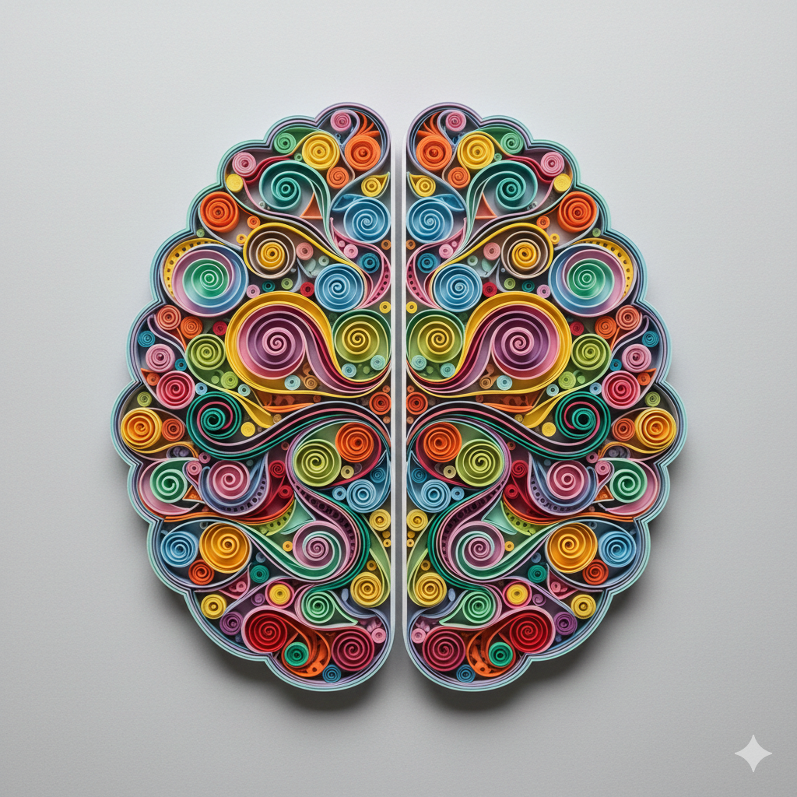

L'autisme, ou trouble du spectre de l'autisme (TSA), est un trouble du neurodéveloppement qui se manifeste dès l'enfance et qui accompagne la personne tout au long de sa vie.
Il se caractérise principalement par des difficultés dans la communication et les interactions sociales, ainsi que par des comportements et intérêts restreints et répétitifs.
Chaque personne autiste est unique : il existe une grande diversité de profils, de besoins et de modes d'expression. C'est pourquoi on parle de “spectre”.
Cette fiche pratique vous propose une présentation claire et fiable de l'autisme : sa définition, sa prévalence, sa place au sein des troubles du neurodéveloppement, les stratégies nationales mises en œuvre, mais aussi les idées reçues à déconstruire et les recommandations officielles pour le diagnostic et l'accompagnement.
Le DSM-IV, publié en 1994, classe l'autisme en cinq types différents, chacun ayant ses propres caractéristiques et manifestations.
Il existe plusieurs types de troubles du spectre autistique, tels que :
Chacun d'entre eux présente des caractéristiques différentes.
Chacun de ces types fait partie des troubles envahissants du développement, caractérisés par des perturbations graves et généralisées des aptitudes sociales, de la communication et des comportements stéréotypés. Dans ce qui suit, nous allons explorer chacun de ces types en détail.

Le diagnostic de l'autisme est clinique.
Il est basé sur une évaluation multidimensionnelle précise, détaillée et individualisée, portant sur les différents aspects du développement et du fonctionnement de l'individu ainsi que sur son environnement, et ce, dans des contextes variés.